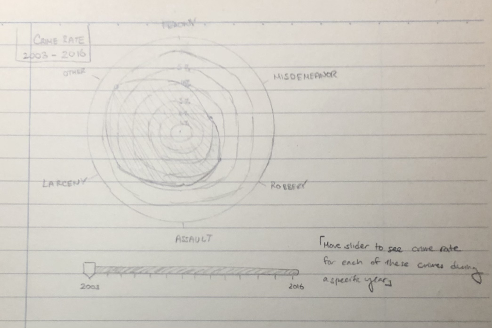

This visualization shows a radial plot of the crime rates of the most frequently suspected
crimes for a Stop and Frisk in NYC from 2003-2016. Each concentric circle
represents a crime rate percentage whose values increases radially. A slider from 2003-2016
will be implemented below the radial plot (only allowed to stop on the years and not anywhere in
between) which will allow the user to see the crime rates from any year and the radial plot will
interactively transition to the user's choice.
This visualization is part of the hook since it allows the user to begin to get a general sense
of how effective Stop and Frisk has been, if at all, and with which crimes it has been most
often implemented.